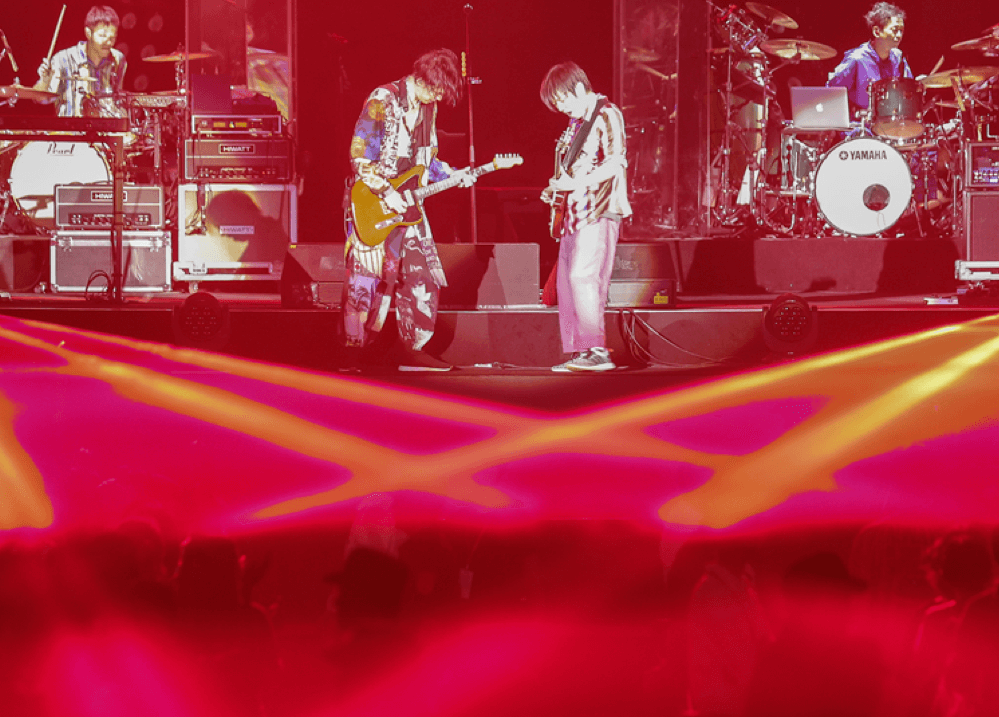
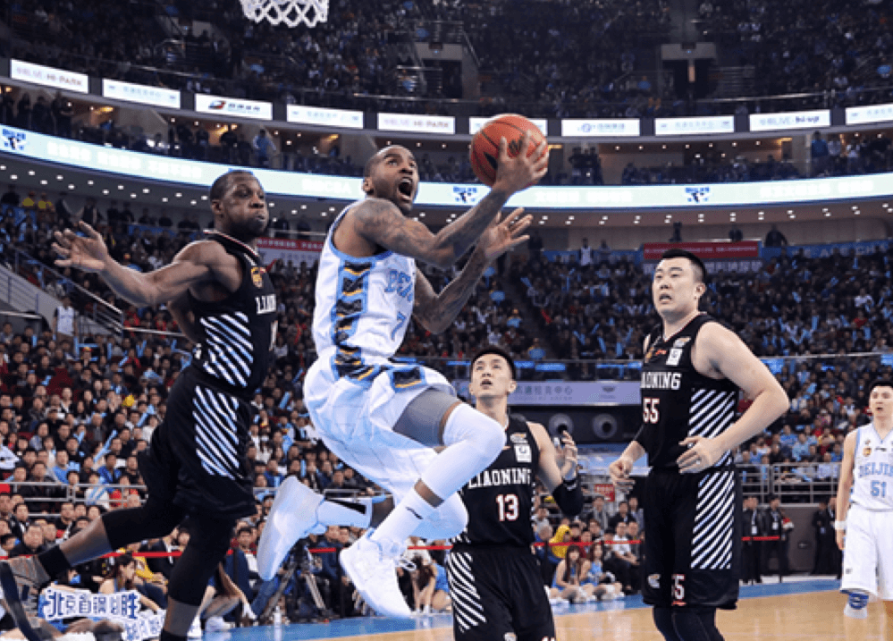
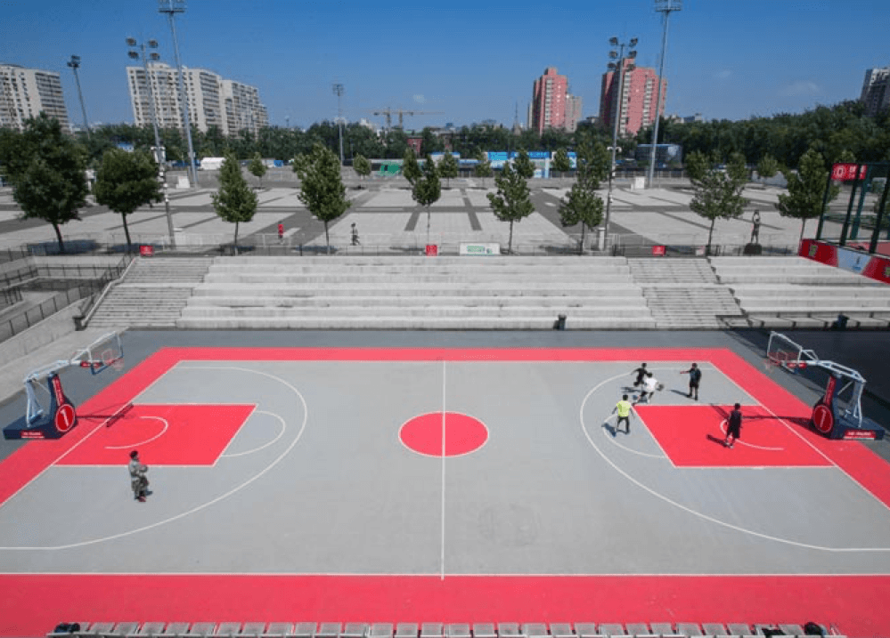
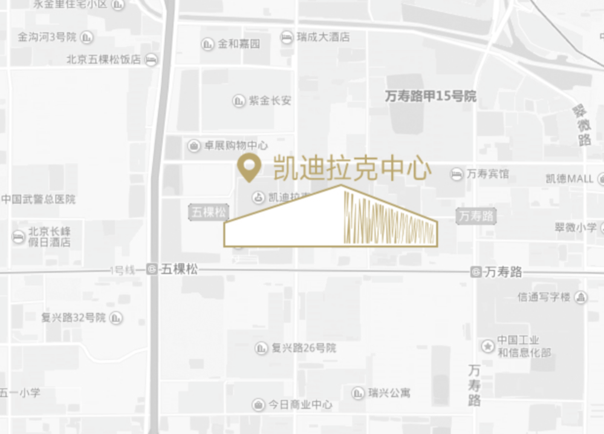
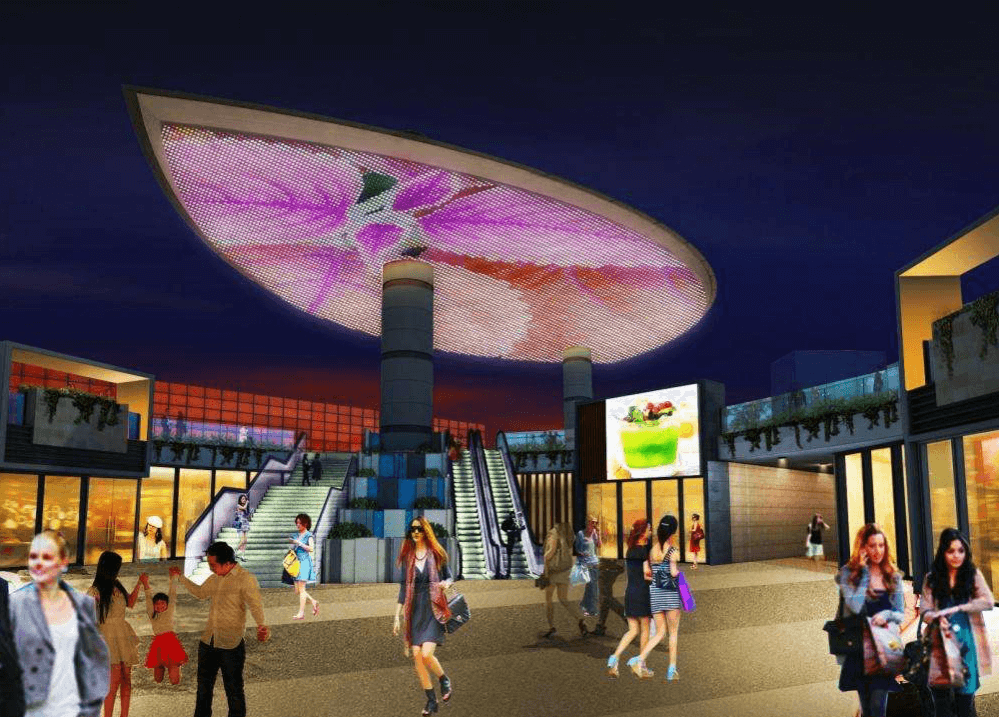
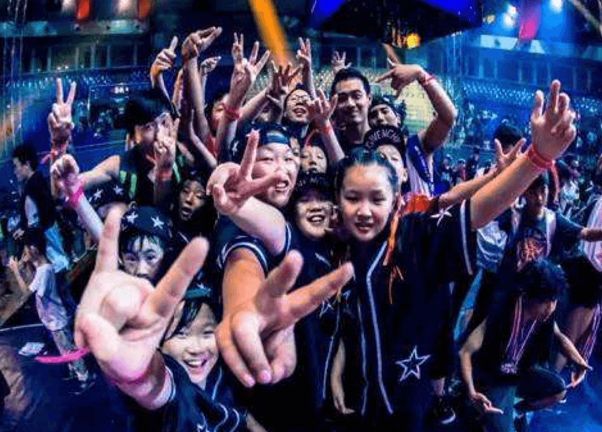

华熙LIVE·五棵松（原五棵松文化体育中心）占地52公顷，由华熙国际投资集团有限公司投资兴建，是北京奥运会篮球、棒球项目的比赛和训练场馆。其中，篮球项目的比赛和训练用馆分别为五棵松体育馆和五棵松体育馆训练馆；棒球项目原有三块场地，两个比赛场、一个训练场，均为临建，奥运会后被拆除。
2011-12赛季，北京首钢男子篮球队CBA总决赛在五棵松体育馆举行，当年北京队即击败七冠王广东队，获得球队历史上首个总冠军。之后，北京队在这里再拿两个冠军，四年三冠，五棵松体育馆见证了北京王朝的诞生，也因此被球迷誉为北京队的福地。2015年，北京首钢男篮决定将常规赛主场也移师五棵松体育馆，顶级球队与顶级球馆携手开创CBA历史新纪元。如今，五棵松体育馆已成为国内及至国际为数不多的高标准专业篮球馆和北京最精彩娱乐活动的全新驻地，场地利用率高达70%，位列世界先进水平。因设施先进，五棵松体育馆还被选为2019年男篮世界杯决赛用馆和2022年冬奥会冰球项目比赛场馆。
五棵松体育馆训练馆（现为M空间）经过改造后，也以独特的2400平米开阔、无立柱、多功能设计以及先进的全套设施配备，成为承接不同台型及规模活动的最佳场所，从小型商业演出、歌迷见面会、企业庆典、新产品发布会、会议宴会，到体育活动、时尚秀等，均可实现。湖南卫视、江苏卫视还曾将这里作为演播厅，录制《中国最强音》、《全能星战》等精彩娱乐节目
按照当初的规划，奥运会后，五棵松文化体育中心将成为一个集专业篮球馆、群众性文化体育设施和商业服务设施等在内的综合体。2014年，华熙集团又投资上亿元，在五棵松体育馆南侧建成了一个群众性篮球主题公园——HI-PARK。HI-PARK占地13000多平方米，共有11片整场、1片空中铁笼半场、一个能容纳500人的主题餐厅以及舒适、现代的淋浴设施。11片整场中的六片室外场地周一至周五白天免费向公众开放。作为群众性篮球公园的升级换代之作，HI-PARK正式对外开放后，迅速成为篮球明星、人气赛事、高端训练营以及潮流文化活动的聚集地。勒布朗·詹姆斯、德怀特·霍华德、雷·阿伦、林书豪、欧文、罗斯、伦纳德、路易斯·威廉姆斯等NBA巨星都曾在这里举行商业活动，NBA姚明学校、闵鹿蕾训练营等篮球训练营也选择将这里作为常驻地。2014年至2016年，国际篮联 （FIBA）世界三对三大师赛中国站均落户HI-PARK，吸引众多篮球爱好者和北京市民前来，成为暑期北京的一大体育盛事。另外，由华熙自办的业余篮球赛事——B·One联赛与“ONE HOOD”社区联赛，也都在HI-PARK举办，成为京城乃至全国篮球爱好者展示自己的舞台以及享受篮球的快乐圣地。
2014年，五棵松体育馆还将占地七万多平方米的南广场进行地面翻新后向公众开放。当年冬天，来自荷兰、有“冰上迪斯尼”之称的“冰世界” 在这里建成亚洲最大四季冰场——五棵松冰世界体育乐园；占地三万多平方米的五棵松雪世界让市民不出北京就能享受滑雪的乐趣。此外，复古盛会、僵尸来袭、死飞自行车、壹零科技节等时尚、趣味活动，让五棵松文化体育广场成为了北京西部潮流活动的聚集地。
2022年冬季奥运会将在北京举行，五棵松体育馆被选定为冬奥会冰球比赛主场馆。为响应国家冰雪发展战略、提升国家冰雪运动实力、推动广大群众积极投身冰雪运动，经市发改委核准批复，北京五棵松文化体育中心有限公司拟在五棵松文化体育中心东南侧建设“五棵松冰上运动中心”项目，该项目将斥资5亿多元，总建筑面积达38400平方米，其中地上建筑面积16400平方米，地下建筑面积22000平方米，共设置南北两块30x61m的标准冰面，地上二层还设置一个剧场。建成后，这里将作为承接2022年冬奥会冰球比赛的热身馆及训练馆，还将为北京市群众冰上运动、青少年冰球培训等提供一流的训练场地和专业服务，将五棵松打造成为中国冰上运动的新地标。
如今的五棵松，凭借多样化的场馆设施、国际一流的硬件条件、高标准的软件服务，不仅是世界当红艺人来京举行演唱会的首选场馆，同时还是北京人的篮球圣地。东有工体、西有五棵松，足球、篮球东成西就，五棵松成为了北京另一张亮丽的城市运动名片。2017年，场馆群活动数量达到500多场，覆盖人群500万！成为北京奥运场馆赛后运营的典范。
文化、体育类大型公建有较强的人流集聚力，握有精彩演出和赛事资源的五棵松场馆群也是如此。不过，体育场馆的“孤岛”式布局，很难让集聚的人流在观演、观赛之余停留下来。场馆要进一步发展，还需要配套设施的完善。
按照华熙集团当初的规划，原北京奥运会棒球场作为五棵松文化体育中心的二期工程，将建设和场馆相配套的商业设施。场馆初步运营成功后，经多方调查和研究，华熙集团决定在这里兴建有别于一般商业体的餐饮、休闲、娱乐型商业中心——五棵松Hi-up。
2017 年4月，在华熙LIVE·五棵松西南角，一片面积近6万平方米的商业区——hi-up惊艳亮相。hi-up西邻西四环，南接复兴路，与地铁一号线五棵松站无缝接驳。中央为大型活动广场，汇聚百余家时尚特色品牌。聚集了各种不同口味的餐饮、各类文化体验、众多酒吧、Live house及运动品牌旗舰店相佑的时尚特色沉浸式互动体验业态。自开业至今，出租率已达到100%，并获得中国经济联盟协会颁发的“2017年度中国商业地产金地标业态创新奖 ”及“北京市阳光餐饮示范街区”荣誉称号。
海淀区作为北京市西部重要的科技、文化、教育、商务区，与东部地区相比，在商业生活上发展相对滞后，特别是特色文化、休闲、娱乐、商业聚集地缺乏，一方面不能适应区域商业发展的需求，另一方面也存在大量的消费外流，Hi-up的建成填补了这方面的空白，不仅满足五棵松场馆观赛观演人群、周边企事业单位和居民的日常餐饮、娱乐和休闲消费需求，还成为了北京西部一个精品荟萃的餐饮娱乐空间、休闲放松空间、聚会消遣空间和商务交流空间。凭借良好的地理位置、便利的交通条件、五棵松场馆群超高的人流集聚能力，Hi-up开业一年已经成为引领海淀品质生活、时尚潮流的娱乐新天地！